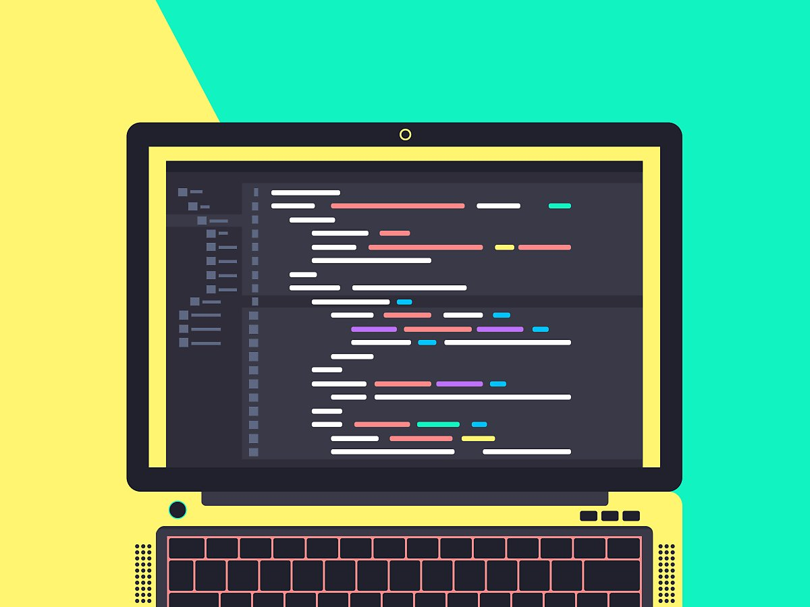

caleb_test_page
creating web page
html wc3
Hypertext Markup Language (HTML)
This is heading 1
This is heading 2
This is heading 3
This is heading 4
This is heading 5
This is heading 6
줄 바꿈 테스트
단락 테스트 br 태그 보다 자유도가 떨어짐 그래서 보통 br 태그를 많이 사용함
css사용하여 45px 떨어뜨림 이를 활용해 p태그의 한계를 극복

- 1.html
- 2.css
- 3.javascript
git 테스트